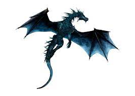

The 6 Types of Dragons
Grid Gallery





Sliding Gallery
Amphiptere
Class: Wind
These dragons have no arms or legs and spend 4/5 of their lives in the air, and they exhibit a level of intelligence remarkably similar to the Dragon. They can fly easily and reach speeds of Mach 3 over 24 hours, making them the fastest dragon on the list. However, they cannot lift anthing more than 100 pounds, making them the weakest dragon on the list. They breathe tornadoes, however, and control how gentle they are and how strong they are. These tornadoes can carry 10 tons at maximum.
Knucker
Class: Water
They have a bite of poison and they slither around in lakes or swamps. They can barely fly, but once they do, for about 2 minutes, they can sustain around Mach 0.8, making them the third fastest dragon in this list. They are the 2nd weakest in physical strength on this list.
Wyvern
Class: Air
In rare cases do they exhibit any signs of intelligence. They are called beasts because of their intelligence, which is, on average, significantly lower than the Dragons'. They can achieve extremely consistent speeds of Mach 1.3 over a span of 6 hours, making them the 2nd fastest dragon on this list and the 4th strongest as well. They breathe acid vapor.
Pure Dragon
Class: Fire
Alongside the Amphiptere, the Dragons(note: the word "Dragon" means Pure Dragon, while the word "dragon" includes this whole list) are the wisest of all the dragons. They are the most famous as well. This dragon is the 3rd strongest on the list and it is the 4th fastest, coming in at Mach 0.6 over a span of 6 hours as well. They breathe fire.
Drake
Class: Earth
These dragons use magic the most(to fly); but, their physical abilities are much greater than their magical abilities. This dragon is the strongest on this list and the slowest as well, going a measly Mach 0.2. They breathe fire.
Hydra
Class: Fire
The Hydra is a multi-headed dragon which is said to grow two heads for each head cut off. It can breathe fire out of every one of them. This dragon is the 2nd strongest on this list, and the second slowest, coming in at Mach 0.3. It makes propulsion by tilting some of its heads back and breathing fire, to make a makeshift rocket..